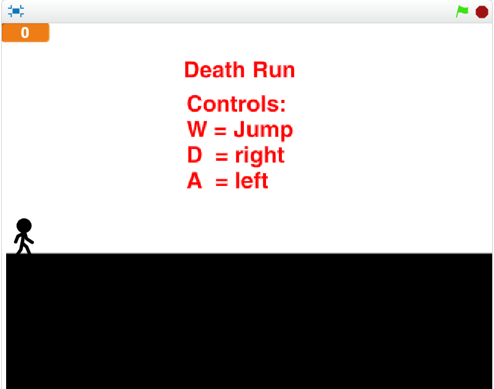

Jason Botros
Death Run

Game link
Description of the game.
- The game is consisting of a boy that tries to escape from a lot of dangerous things.
- The type of the scoring system is by passing the levels.
- the game gets more difficult through the levels. As the level increase the diffculty increase.
- The use of randomness occurs starting from level 3.
- The game end if the sprite touch the red color or when he wins.
Reflection
- I made the game for the school project to be the most fun game.
- The two successful points is that I know how to use the more blocks and also know how to use random numbers.
- The two obstacles is that how to move the sprite with changing costumes and we dealed with it by using (My reciving) block. The second one is that there are sprits that did not disapear but we went through it by using the wait block
- I would make more difficult levels if I had more time.
That is used to make the levels
That is the more block that we used for our project